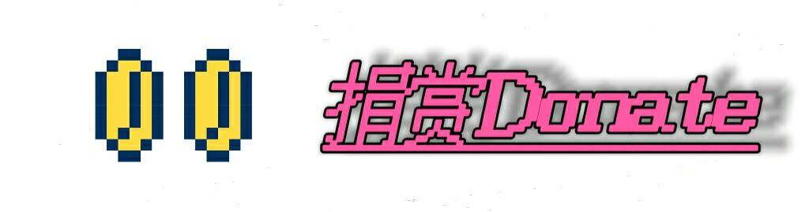

最后更新时间:26/3/28 by我只是路过的呀
av277028405 P1-P151 “创价学会猎奇合集”
av10492
P1 久本先进国/死了
经典老番:
高技术力:
hrhr领域:
高精&猎奇
哔哩哔哩危险地带
av1绿坝绿坝☆河蟹你全家
av23 被蓝蓝路的七变化洗脑后，兴致很高
av39 坚持下去吧
av106 最终鬼畜蓝蓝路
av107 最终鬼畜二小姐
av314 电磁炮真是太可爱了
av508 【V家】蓝蓝路引发的异变
av4028 巡音-Toeto
av5317 【创价圣教】破坏性招式出没注意
av41630 琪露諾疾行
av10429 [万恶之源]葛平 吴克 小光头的由来
av12450 fuck you all
av16097 工口动画×RED ZONE(P1 EROGA ZONE)
(P2 ERO☆SCENE)av25674 琪露諾的完美瞎眼教室
av34471 最终鬼畜乌贼娘
av40162 “吔屎啦，梁非凡”非凡哥原版片段
av53065 Happy sex!!!!av53376 【略鬼畜合集】教祖信徒的熊孩子们【11P大容量】
av62797 【高兴帝风注意】猎奇妹妹控兄记
av87519 [合集]美国圣地亚哥原版广告
av88885 カルトマンの妖怪熟女
av97952 【东方手书】!!!!!!!!!!!!!!!!!!!!!! av123688 最终鬼畜吸氧羊【东方喜洋洋】 av129073 旅立ちの日に av129520 sm666 so Happy av161269 【東方獵奇鄉】एलएसडी यात्रा av170001 保加利亚妖王HOP av268364 奈亚子 so happy
av277610 总之我也不知道叫什么(p1)
av277610p2 总之我也不知道叫什么(p2)
av277610p3 总之我也不知道叫什么(p3)
av301153 【歌唱河北】夏天到了，元首和大家欢唱《我爱洗澡》
av312650 空城计跟风--暴菊计
av328530 精神猎奇歌曲！精神崩坏曲
av423257 Doll
av461163 兄贵♂本篇
av509491 满足大家族【1本满足X团子大家族】
av513928 【三国杀】【潜行吧！蜀备们！】
av524968 【元首】一笑懸命
av531092 【金坷垃】某科学的超肥料炮S【该来的早来了】
av535903 奈亚子w so happyav545132 【元首】潜行吧！元首子W
av563083 新品种的食人鱼
av570210 《生人回避》OP四种
av588247 高能，心脏病者速速撤离，口袋妖怪“死亡之音”紫苑镇BGM倒放版，这个更带感~
av603995 [东方旧日统治者]孕腹飞翔 ~ Lunamoto Moo
av622679 test.sfk 胡萝卜hrhr
av625991 【毫无鬼畜】油腻的师姐在哪里？
av632142 【飞机君】吃狗粮so happy
av731941 【地铁音MAD】迈皋zone（南京地铁+上海地铁等）
av882708 章鱼哥自杀
av954563 Squidward\'s Suicide Original 章鱼哥自杀 原版
av1337495 【创价学会】柴田理惠原版素材
av1345966 蓝蓝路广告恶搞版
av1522050 大力哥原版采访 /万万没想到
av1593037最终猎奇蓝蓝路
av1594039 烧红镍球放入失恋男子
av1979757 退教神器
av2856521 【诸葛琴魔】紫苑镇的超·精神污染琴魔
av2868125 【B站最终高等精神污染】猎奇的聒噪之音 和谐版（耳机党福利）
av3720705 喝了 VS 学园生活部 VS SM666 VS 影云龙 精污对决 Bad Apple
av4028856 博丽灵梦的自杀
av4033926 【电音单曲】我是papi酱
av4622995 精污战队 VS NEO军团 高精对决 Bad Apple!!
av18929311 柴田の365個擬音語世界
av142780 【猎奇注意】阿卡林怒了
av928697 【全程诡异】黑暗米老鼠
av11417 【烂头部】Bad Atama!!
av126692奔跑吧灯里酱
av122706 【摇曳百合】灯里你肿么啦
av318047 【超治愈】阿卡林消失之后♪♪
av42325 小丑的假声-Naget Bird
av86497 银河最强的小丑
av73927320 啊↑叭↓叭→叭→叭↓叭↑叭↓叭↓叭↑叭→叭→
av454033 月亮信仰【高精注意】
av2799535危险的警署
av459582 無題
av1216934 紫苑镇死亡音乐高质立体声
av2008644 hrhr so happy
av860481 厂长 so Happy -EX mix-
av10198539 香蕉君热舞(维护中)
av11009508 蕉忍♂疾风传
av344843610 希望与梦想的土地ニコニコ危険地帯
sm24338276 【Bad Apple!!】Bad Kensaku!!【検索してはいけない言葉】
YouTube危險地帶
---我是一条分割线，看见我就说明你已逃离危险地带---
音mad
av344843610 希望与梦想的土地20210902 测试用
20210718 压缩为20kb/s
20180724 摘选考古链 内有改动
本站更新日志
作者的b站主页我只是路过的呀
友链: 末忆-铁锈盒子
过时友链: 猎奇导航站(寄了)

正在浏览该网站的人：棍母